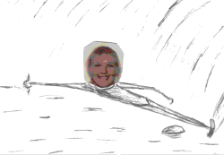

- ON THE DOCK (an online memoir)
- Welcome to my water ski site. I am Anda Vitols, a retired waterskier from Ontario, Canada. This is an online memoir of a really nice chapter in my life.
- On "the dock" is what I called home base in competitive water skiing, on
Lake Puslinch in Cambridge, Ontario. Although I skied at many places
with many people in Ontario, "the dock" was closest to my home and work.
Tom "Tucker" Muir always made sure I was okay, I trained and competed
with Judy Messer,
who was huge positive influence. We have since dispersed geographically, but still keep
in touch. Wally Sokolowski managed the practical
aspects for my competitions, starting from novice through sanction. I
was many time Ontario champion, Eastern Canadian water ski champion in
92, and have Nationals medals from 91, 92. I'm a properly credited coach
and judge, and owned my own ski school in 80s. I was also a
professional show skier.
- ANDA'S TRAINING & COMPETITION NOTES
- My Notes: How to Water Ski (1980s)
- My Book: Self-Directed Coaching Manual: Sport Psychology Resources for Elite Athletes (2011)
- ANDA'S WATER SKI PICTURES
-

- TEAM CANADA BLOG ARCHIVE water ski & alpine
- From the dock to the world, I go along for the ride: "the kids" from Puslinch lake are Jason McClintock, Whitney McClintock, Jenna Mielzynski, and Erin Mielzynski developed their
foundations on "the dock".
- Water Ski Worlds Toronto (1979)
Copyright Anda Vitols 2020-2024. All rights reserved.
|